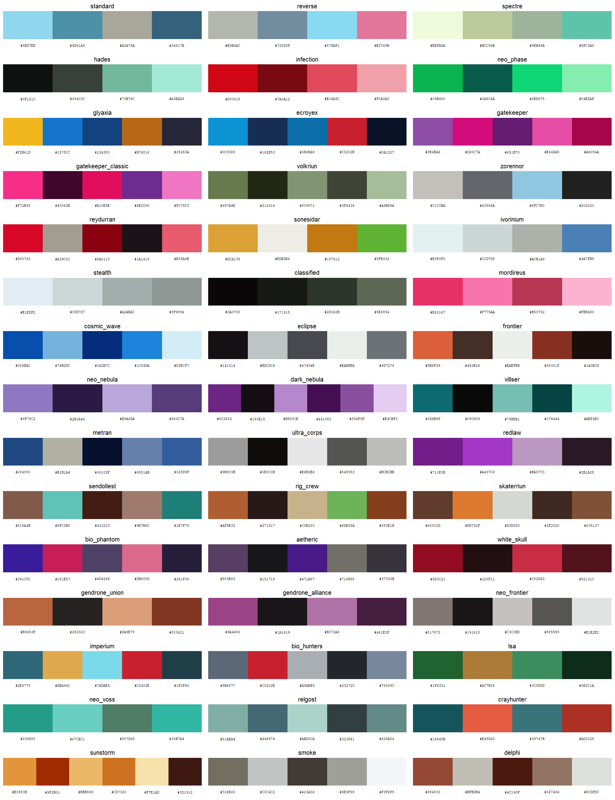
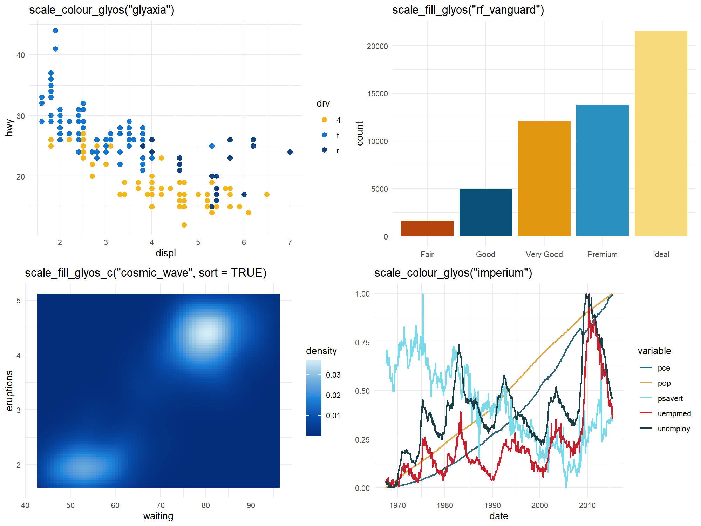
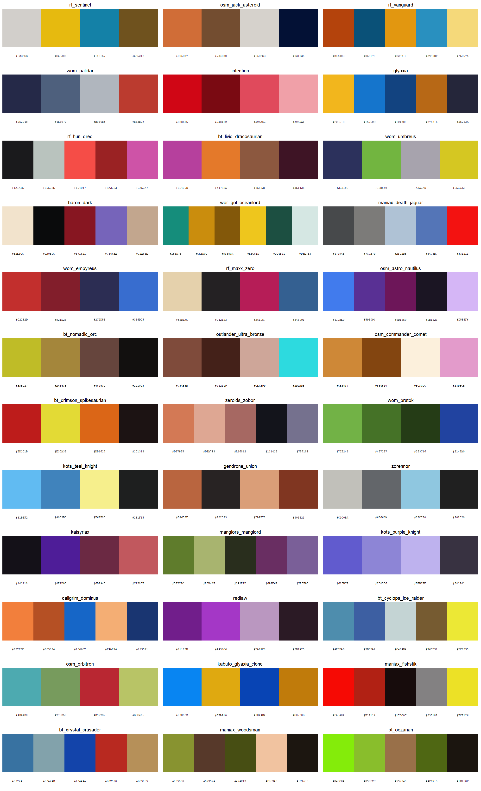

Color palettes for R and ggplot2 based on the named colorways of the Glyos toy system: Onell Design’s own Glyos line plus the Glyos-compatible lines from partner companies such as TheGodBeast (Kabuto Mushi), Spy Monkey Creations (Weaponeers of Monkaa, Battle Tribes), Toyfinity (Robo Force, Zeroids, Manglors), the Four Horsemen (Outer Space Men) and a dozen more. It works the same way as packages like wesanderson: pick a colorway by name, get a vector of hex colors, or drop a scale straight into a ggplot.
glyospalettes is a fan project and is not affiliated with or endorsed by any of the companies whose colorways it describes. Hex values are approximations curated from product photography; see “How the palettes were made” below.
Browse online
Every palette, with its colors, reference photo and provenance, is browsable and filterable at https://bmaitner.github.io/glyospalettes/articles/browse.html. Each card has a Suggest a change link that opens a prefilled GitHub issue where you can propose different colors or attach a cleaner photograph.
Installation
# install.packages("pak")
pak::pak("bmaitner/glyospalettes")Usage
library(glyospalettes)
# which companies are covered, and how many palettes each has
glyos_companies()
table(glyos_colorways$company)
# palette names, optionally for one company or product line
glyos_palette_names()
glyos_palette_names(company = "TheGodBeast")
glyos_palette_names(line = "Battle Tribes")
# the colors of one colorway (prints the swatches and the hex codes)
glyos_palette("spectre")
#> Glyos colorway 'spectre' (4 colours)
#> Onell Design / Glyos: Spectre
#> #EEFADA #BCC99B #9EB49A #5FC3A8
# first three colors, a 12-step gradient, or the same gradient dark-to-light
glyos_palette("glyaxia", 3)
glyos_palette("hades", 12, type = "continuous")
glyos_palette("hades", 12, type = "continuous", sort = TRUE)
# swatches with hex codes, for one company at a time
glyos_show_palettes(company = "Onell Design")
glyos_show_palettes(company = "Spy Monkey Creations", ncol = 2)
ggplot2
scale_colour_glyos() and scale_fill_glyos() build a discrete scale by default, or a continuous gradient with discrete = FALSE. The explicit _d and _c variants and the American scale_color_* spellings are also exported. sort = TRUE on a continuous scale orders the palette from darkest to lightest first.
library(ggplot2)
ggplot(mpg, aes(displ, hwy, colour = drv)) +
geom_point(size = 2.5) +
scale_colour_glyos("glyaxia")
ggplot(diamonds, aes(cut, fill = cut)) +
geom_bar() +
scale_fill_glyos("rf_vanguard")
ggplot(faithfuld, aes(waiting, eruptions, fill = density)) +
geom_raster() +
scale_fill_glyos_c("cosmic_wave", sort = TRUE)
ggplot(economics_long, aes(date, value01, colour = variable)) +
geom_line() +
scale_colour_glyos("imperium")
Set reverse = TRUE to flip a palette. If a discrete variable has more levels than a palette has colors, the palette is interpolated so every level still gets a color, at some cost to legibility.
Finding a palette that works for a plot
Most colorways were designed to look good on a toy, not on a chart. glyos_find_palettes() shortlists the ones whose colors hold up for a given job, judged from the colors themselves:
glyos_find_palettes("categorical") # every pair of colours clearly distinct
glyos_find_palettes("colorblind") # still distinct under simulated CVD
glyos_find_palettes("sequential") # one hue, wide lightness range
glyos_find_palettes("diverging") # two hues with a light colour between
# restrict to a company, or see the shortlist as swatches
glyos_find_palettes("colorblind", company = "Onell Design")
glyos_show_palettes(use = "colorblind", ncol = 3)
The judgments come from glyos_palette_stats(), which reports the smallest pairwise distance between colors in CIE Lab, the same after simulating deuteranopia, protanopia and tritanopia, the lightness range, and the hue spread. The thresholds are simple heuristics, so treat the result as a shortlist to look at rather than a guarantee.
Colorway background
glyos_colorways is a data frame with one row per palette: the company and product line, the colorway name as the manufacturer uses it, the year and wave of the reference release where known, a description of the colors, and a link to the reference figure in the Official Glyos Database (Onell) or the Glyos Wiki (partners).
t(glyos_colorways[glyos_colorways$palette == "kabuto_infection", ])
#> palette "kabuto_infection"
#> company "TheGodBeast"
#> line "Kabuto Mushi"
#> colorway "Infection"
#> year "2014"
#> wave NA
#> n_colours "3"
#> description "Clear red plastic."
#> reference_figure "Infection Kabuto Mushi"
#> source "https://glyos.fandom.com/wiki/Infection_Kabuto_Mushi"
#> image "https://static.wikia.nocookie.net/glyos/images/..."The image column is a direct link to the photograph each palette was sampled from, which is what the online browser shows.
Coverage
| Company | Line(s) | Palettes | Prefix |
|---|---|---|---|
| Onell Design | Glyos | 45 | none, e.g. spectre, glyaxia
|
| TheGodBeast | Kabuto Mushi | 10 | kabuto_ |
| Spy Monkey Creations | Weaponeers of Monkaa, Battle Tribes | 18 |
wom_, bt_
|
| Toyfinity | Robo Force, Mordles, Zeroids, Manglors | 12 |
rf_, mordles_, zeroids_, manglors_
|
| Four Horsemen Studio | Outer Space Men, Power Lords | 12 |
osm_, powerlords_
|
| Toy Pizza | Knights of the Slice | 10 | kots_ |
| Rocom Toys | Mighty Maniax | 10 | maniax_ |
| Bio-Masters Design | Bio-Masters | 8 | biomass_ |
| Rawshark Studio | Callgrim | 10 |
callgrim_, order_
|
| ManOrMonster? Studios | Warlords of Wor | 10 | wor_ |
| NiStuff | Outlander | 10 | outlander_ |
| Nemo’s Factory | A/V Robot | 8 | avrobot_ |
| Cappy Space | Cappy Space | 8 | cappy_ |
| Banimon | Banimon | 6 | banimon_ |
| Culture Pirates | Bit Figs | 5 | bitfigs_ |
| October Toys | Skeleton Warriors, Breaker Buildman | 4 | none |
| Zullbeasts | Zullbeasts | 4 | none |
| Spaced Out Design | Spaced Out, Rise of Acris | 3 | none |
Every partner company’s palettes are drawn in man/figures/palettes-<company>.png; the Onell set is shown above. The Onell palettes cover the classic colorways (Standard, Reverse, Spectre, Hades Force, Infection, Neo Phase, Glyaxia, Gatekeeper, Stealth, Classified and so on) plus the named division and faction waves. Partner palettes are named after a representative figure or edition in that line.
How the palettes were made
There is no published set of hex values for Glyos colorways, so these are approximations built in three steps:
- Each colorway was matched to a representative figure. For Onell Design that is an entry in the Official Glyos Database, preferring a Pheyden or Glyan so that body, secondary and paint colors are all visible. For partner companies it is the figure’s page on the Glyos Wiki.
- The dominant colors of that figure’s lead photograph were extracted with k-means clustering, after masking out pixels that match the photo’s border colors so that studio backgrounds, rocks and tabletops do not leak into the palette.
- The clusters were reconciled by eye against the manufacturer’s own color descriptions where they exist, chiefly the Onell drop announcements on the Glyos Transmission Web Log (for example “Pappysoup Green/Olive Green with light green visors and white tampo”, or “Cool Gray 1C + Cool Gray 8C + Cool Gray 10C detail lines” for Zorennor) and the wiki’s release lists, and ordered so the first few colors in each palette are the most distinct.
Each palette contains only plastic and paint colors, so a colorway cast in a single clear plastic yields a short palette of that hue’s highlight, mid-tone and shadow, and a two-color colorway such as Kabuto Mushi Radioactive is just two colors. Palettes range from 2 to 6 colors. Clear, glow-in-the-dark, metallic and pearlescent plastics do not reduce to a single flat color; those palettes reflect how the plastic photographs rather than the pigment itself. Partner-company photographs vary more in lighting and background than Onell’s, so expect those palettes to be rougher. Corrections are welcome, ideally with a photograph or a manufacturer color description to back them up. Use the palette browser to open a prefilled issue for a specific palette, or pick a form from the issue templates: suggest a palette change, submit a cleaner reference photo (plain background, neutral light), or propose a new colorway. glyos_show_palettes() prints the hex codes under each swatch to make reporting easy.
Trademarks
Glyos, Pheyden and the Onell Design colorway names belong to Onell Design. Kabuto Mushi, Weaponeers of Monkaa, Battle Tribes, Robo Force, Zeroids, Manglors, Mordles, Outer Space Men, Power Lords, Knights of the Slice, Mighty Maniax, Bio-Masters, Callgrim, Warlords of Wor, Outlander, A/V Robot, Bit Figs, Banimon, Skeleton Warriors and Zullbeasts belong to their respective companies. This package only records approximate color values and uses the names to refer to them.